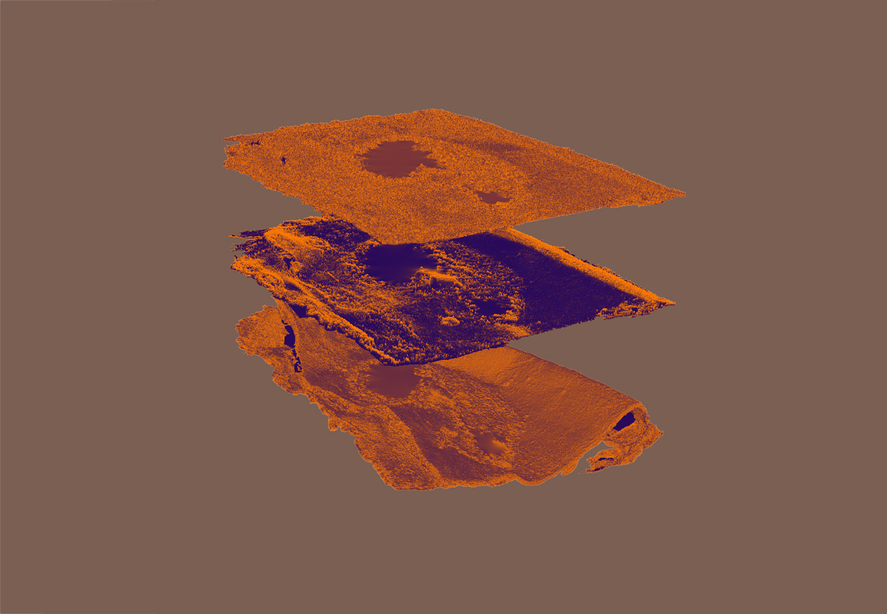

Clastic music
Clastic music is a set of musical pieces where I play with the geological concept of the clast: new entities and forms created out of pre-existing fragments.
Akin to how machine creativity uses pre-existing data to generate new forms, in Clastic music I use rhythmic patterns in simple and compound meter—common in contemporary music genres—as the fragmentary entities.
The pre-existing fragments, the training data, consist of a dataset of rhythms in MIDI format, collected and assembled using 2-step, gqom, and footwork tracks.
To create the rhythmic clasts I use a R-VAE, a software device that models rhythms in simple and compound meter based on the training data.
In live performance, I explore and play with the models by means of mapping a two-dimensional performance space to the latent space of the VAE, so that rhythmic patterns are retrieved, decoded, and interpolated by means of using an imaginary playback head in the latent space.
Clast 1 – Siltstone
In Siltstone, I explore a rhythmic latent space learned from a tiny dataset consisting on 12 MIDI clips of footwork. Instead of triggering drum sounds, I designed a physical model-based, mallet-like instrument and I modify the characteristics of the sound in real time for enhanced expressivity. The piece is totally improvised.
The video was shot during a live performance at the International Festival of Digital Creativity and Electronic Music MUTEK 2020, held in Montréal from September 8 to 13, 2020.
I use a MIDI controller as a gestural interface to map the XY position in the performance space to the position in the latent space. R-VAE outputs MIDI messages that I use to play sounds from the. Tempest, an analog drum machine, and AAS Chromaphone 2, an acoustic object synthesizer based on physical modelling.
Clast 2 – Breccia
In this piece, named Breccia, I improvise on top of previous latent space explorations, resulting on new music made of rhythmic clasts built on top of another clasts.
R-VAE-JS
To facilitate the exploration of rhythmic latent spaces, Louis McCallum, Esteban Maestre, Rebecca Fiebrink, and myself developed a web-based visualizer designed for the dynamic representation of rhythmic latent spaces.
This tool facilitates greatly the exploration of the rhythmic spaces, because it provides a visual feedback that otherwise would be missed. Here there is a demo video playing with the browser and using the Tempest as sound engine.
PLAY WITH IT!
You can play with R-VAE-JS directly on the browser. The following iframe instantiates the app with a preloaded model. You will hear preloaded samples from the browser, or you can use sounds generated by any MIDI-enabled device. This last feature works only in Google Chrome.